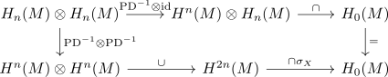

intersection form symmetric for even n
Proposition
Let \(M\) be a closed connected \(4n\)-dimensional manifold. Then the intersection form is symmetric
Proof
consider the commutative diagram

which commutes as for $\alpha, \beta \in H_n(M)$ and the unique images under $\mathrm{PD}^{-1}$
\begin{align*}
\mathrm{PD}^{-1}(\alpha) \cap \mathrm{id}(\beta) =& \overline{\alpha} \cap \beta \\
=& \overline{\alpha} \cap (\overline{\beta} \cap \sigma_{M}) \\
=& (\overline{\alpha} \cup \overline{\beta}) \cap \sigma_M
\end{align*}
This then follows from the <skew symmetry> of the cup product for odd $n$
see: